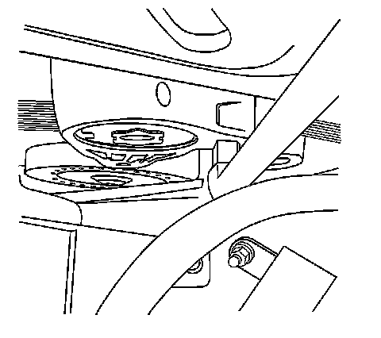
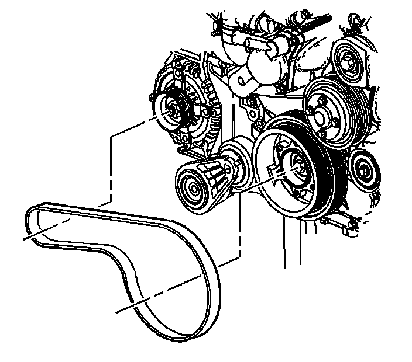
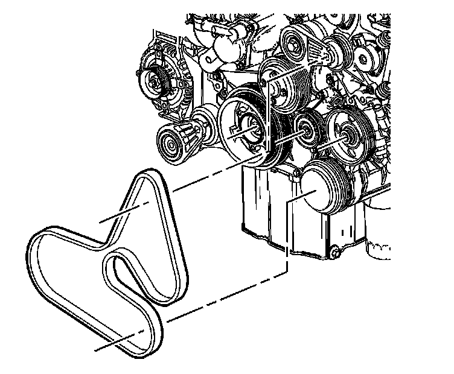
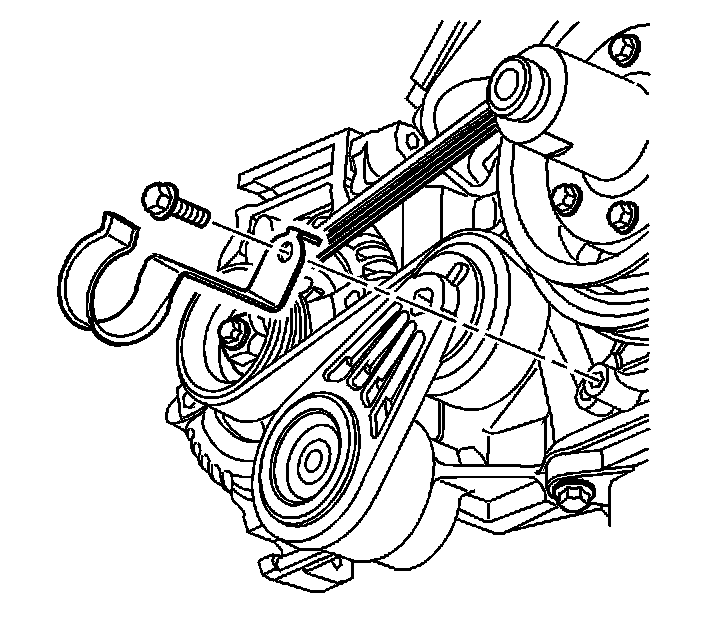

138. Drive Belt Installation
Drive Belt Installation
Inner Drive Belt

1. Insert a 1/2 inch drive extension into the inner drive belt tensioner.
2. Push down on the extension in order to allow the installation of the inner drive belt.

3. Route the inner drive belt around the crankshaft balancer inner pulley, the generator pulley and the inner drive belt tensioner pulley.
4. Ensure the inner drive belt is properly seated in all the pulleys.
5. Slowly release the inner drive belt tensioner back to its original position. This will apply tension to the inner drive belt.
6. After installation, inspect the inner drive belt for proper routing and the correct alignment.
Outer Drive Belt
1. Insert a 1/2 inch drive extension into the outer drive belt tensioner.
2. Push down on the extension in order to allow the installation of the outer drive belt.

3. Route the inner drive belt around the crankshaft balancer outer pulley, the A/C compressor pulley, the drive belt idler pulley, the P/S pump pulley, the water pump pulley and the outer drive belt tensioner pulley.
4. Ensure the outer drive belt is properly seated in all the pulleys.
5. Slowly release the outer drive belt tensioner back to its original position. This will apply tension to the outer drive belt.
6. After installation, inspect the outer drive belt for proper routing and the correct alignment.

7. Install the radiator hose bracket.
Notice: Refer to Fastener Notice (Fastener Notice) .
8. Install the radiator hose bracket bolt.
Tighten the radiator hose bracket bolt to 25 N.m (18 lb ft).